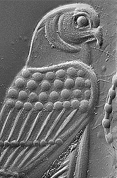
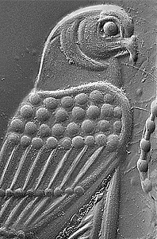

The methods used by the ancient seal-engravers can be identified by the marks left on the seals by their tools. These marks can be studied using a scanning electron microscope. First, detailed impressions of the carved designs are made using fine moulding 'wax' (normally used by dentists to make impressions of our teeth). Then, by magnifying the impressions in the scanning electron microscope, we can see the marks made by the different engraving tools.
 

The four images above show the differences in markings made by different engraving tools. By clicking each image you will find out how they were made.
See Dominique Collon's book on Near Eastern Seals published by British Museum Publications (1990).
For a full list of Publications: Scientific Publications